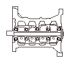

ピストン/クランクシャフトの取付け
専用工具
ドライバ ハンドル15×135L 07749-0010000
ベアリング ドライバ アタッチメント28×30 07946-1870100
オイル シール ドライバ アタッチメント 07ZAD-PNA0100
クランクシャフトを新品に交換した場合は、専用工具を使用して、クランクシャフト エンド ブッシュを取付ける。
メイン ベアリングのオイル クリアランスを点検する。
コンロッド ベアリングのオイル クリアランスを点検する。
メイン ベアリングおよびコンロッド ベアリングの表面にエンジン オイルまたは二硫化モリブデンを塗布する。
ピストンの側面およびシリンダ壁の内側にエンジン オイルを塗布する。
クランクシャフト エンド ブッシュ打込み量
ピストンの‘‘ ’’マーク（A）をカム チェーン側に向けてシリンダ ブロックにハンマの柄などで静かに押込む。
クランクシャフトが取付けてある場合は、コンロッドでクランクシャフトを傷つけないように注意すること。
取付けボルトのネジ部、ボルト座面にエンジン オイルを塗布して、クランク パルス プレート（A）をクランクシャフト（B）に取付け、クランクシャフトをシリンダ ブロックに取付ける。
パルス プレートは 機種マーク（C）を外側に向け、パルス プレートのタブ（D）とクランクシャフトの溝（E）を合わせて取付けること。
エンジン オイルを塗布したスラスト ワッシャ（A）をNo.4ジャーナルに取付ける。
スラスト ワッシャは溝のある方を各々クランクシャフトに向けて取付けること。
コンロッド ボルトの外径を2箇所で測定し、外径の差を求める。
•
測定にはマイクロメータを使用すること。
•
全てのコンロッド ボルトで測定を行うこと。
コンロッド ボルト外径の差
標準値:
0－0.05mm
クランクシャフトをNo.2、No.3のコンロッドに合わせて、コンロッド キャップを取付け、クランクシャフトを回してNo.1、No.4のコンロッド キャップを取付ける。
コンロッド キャップの取付けは、方向を間違えないように嵌合マーク（A）を合わせて取付けること。
コンロッド ボルトを規定トルクで締付ける。
コンロッド ボルトを締付ける際に、規定締付け角を過ぎてしまった場合は、一度ボルトを取外し、
ステップ9
のコンロッド ボルトの点検を行ってから再度締直すこと。
規定トルク:
9.8N･m(1.0kgf･m)＋90°
ベアリング キャップをベアリング キャップ ブリッジに取付ける。
ベアリング キャップは矢印（A）がカム チェーン側に向くように取付ける。
シリンダ ブロックおよびNo.5ベアリング キャップから古い液体パッキン、油および汚れを除去する。
No.5ベアリング キャップのシリンダ ブロック接触面にHonda純正液体パッキン1216、5699、1216Eまたは5999を塗布する。
破線（A）に沿って線径φ2.5程度の液体パッキンを塗布する。
ベアリング キャップ ブリッジを取付ける。
•
液体パッキン塗布後5分以上放置した場合は、そのまま取付けない。一度はがし、塗布し直す。
•
オイルの注入は取付け後30分以上経過した後に行う。
•
液体パッキン塗布面には触れない。
ベアリング キャップ ボルトのネジ部、ボルト座面にエンジン オイルを塗布する。
ベアリング キャップ ボルトを番号順に締付ける。
規定トルク:
25N･m(2.5kgf･m)＋40°
クランクシャフト オイル シール取付け部にはみ出した液体パッキンをふき取る。

クランクシャフト オイル シールをシリンダ ブロックに確実に打込む。
オイル シールは部品番号を外側にして取付ける。
シリンダ ヘッドを取付ける。
オイル ポンプを取付ける。
オイル パンを取付ける。
オイル シール打込み量
クランク センサ カプラ（A）を接続し、クランク センサ カバー（B）を取付ける。
ハーネス カバー（C）を取付ける。
ドライブ プレートを取付ける。
•
CVT車
•
AT車
トランスミッションを取付ける。
•
CVT車
•
AT車
エンジンAssy.を取付ける。
新品のベアリングを組付けた場合、急激に回転を上げるとベアリングがはく離または焼付きを起こすため、アイドリングで慣らし運転を10－20分程行うこと。
CVT車
AT車